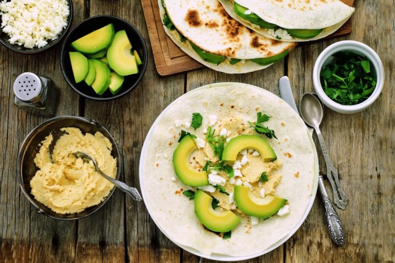

What Are what-are-macronutrients >>
Everything You Should Know
Improve your health
Understand how many calories you need to eat to maximize performance Select the optimal foods to fuel your performance Improve your health with proper macronutrient intake